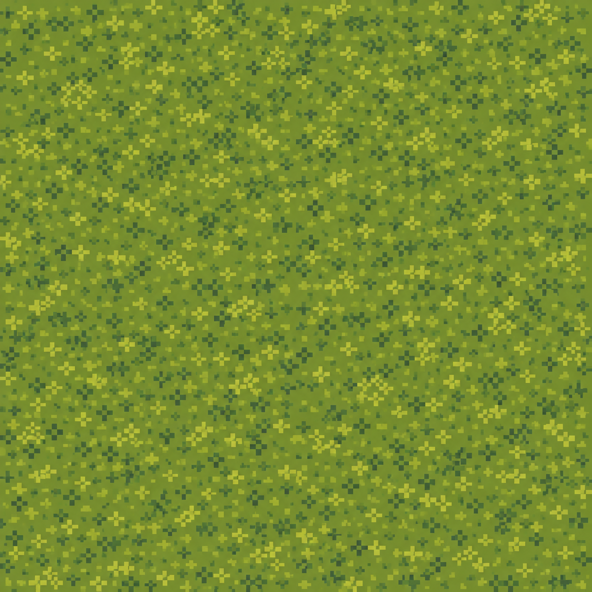
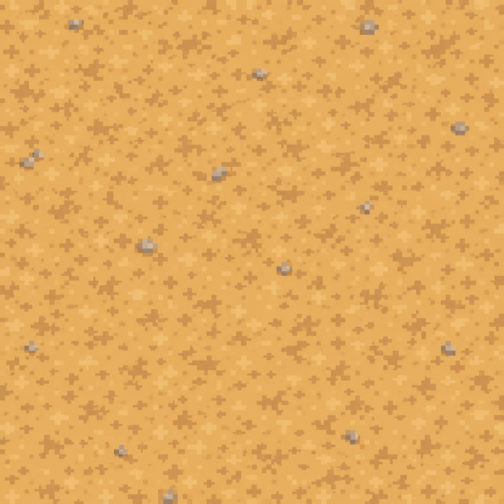
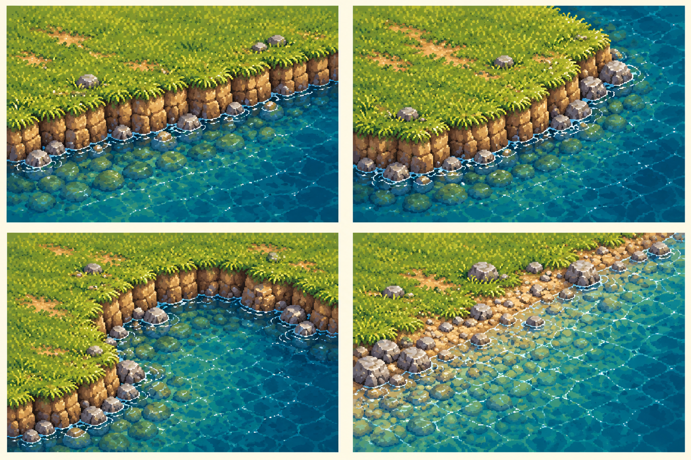

P0 · Nền cỏ, đất và cấu trúc bờ sông
Nguồn hình mới theo art target r009. Bảng bờ là nghiên cứu hình dạng, chưa bộ autotile ghép được. Nền thử thu về 64×64 bằng nearest-neighbor để kiểm tra; chưa dọn pixel native hoặc chứng nhận seamless.
Nền cỏ

Nền yên để các cụm cỏ riêng nổi bật.Đường đất

Màu đất ấm, hạn chế sỏi lớn và chấm nhiễu.Thử lặp và ráp nền
Đường chuyển cỏ/đất hiện là mask kỹ thuật có mép bậc pixel; không phải mép cỏ vẽ tay đã hoàn thành. Chỗ nối texture phải được kiểm tra dưới nhiều mức phóng.
Bốn nghiên cứu bờ

| Mô-đun | Chức năng | Cần sản xuất tiếp |
|---|
| Bờ thẳng | Dẫn đường sông, tạo cao độ đất | Hướng Bắc/Đông/Nam/Tây cùng mép nối |
| Góc lồi | Mũi đất nhô ra nước | 4 hướng, chiều cao đồng nhất |
| Góc lõm | Vịnh nhỏ và chỗ đổi hướng | 4 hướng, không lỗ ở góc trong |
| Bãi sỏi | Nối đất tới vùng nông | Mép đất/sỏi/nước nông, collision riêng |
Không xoay cả ảnh có bóng sáng để thay mọi hướng bờ; hướng camera và ánh sáng phải giữ thống nhất.
Hồ sơ 240 và checklist · Nguồn và prompt imagegen